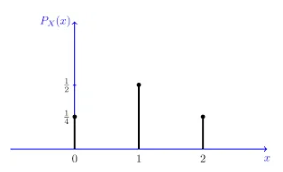

For a given data generation process, a probability distribution depicts the expected outcomes of possible values. Mathematically, probability distributions represent the values of a variable which holds the probabilities of an experiment, event, or process. In Machine Learning, we must deal with a large amount of data, and the process of finding patterns in said data requires a large number of studies based on probability distributions.
Elements of the probability distribution
graph TD A[Probability Distribution Function] --> B[PMF] A[Probability Distribution Function] --> C[PDF] A[Probability Distribution Function] --> D[CDF]
graph TD
A[Probability Distribution Function] --> B[PMF]
A[Probability Distribution Function] --> C[PDF]
A[Probability Distribution Function] --> D[CDF]
For now only PMFs and PDFs will be discussed.
Probability Mass Function

In statistics, a probability mass function is a function that gives the probability that a discrete random variable is exactly equal to some value. The probability mass function is often the primary means of defining a discrete probability distribution, and such functions exist for either scalar or multivariate random variables whose domain is discrete. Mathematically, the PMF is defined as:
Let X be a discrete random variable with range
\[
R_{X} = {x_{1},x_{2},x_{3},\dots} \text{finite or countably infinite}.
\]
is called the probability mass function (PMF) of \(X\).
The Probability density function represents the density of a continuous random variable lying between a specific range of values. We can also call it a “Continuous Probabiliy Distribution”. Mathematically,
\(\overbrace{F(x) = P(a \leq x \le b) = \int_{a}^{b}f(x)dx \geq 0}^{\color{cyan}{Probability Density Function}}\)\(\overbrace{F(x) = P(a \leq x \le b) = \int_{a}^{b}f(x)dx \geq 0}^{\text{Probability Density Function}}\)